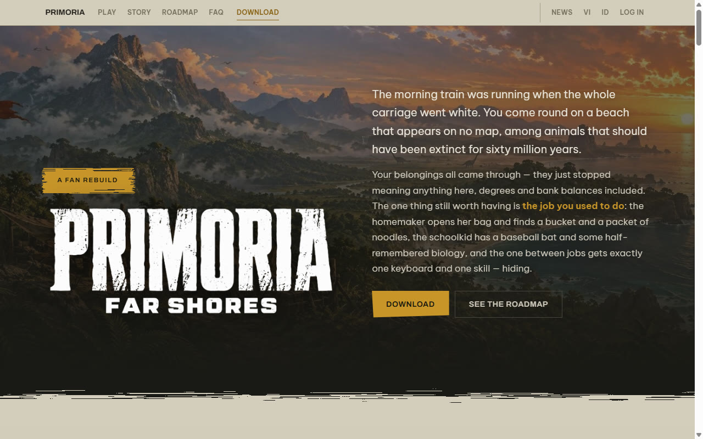
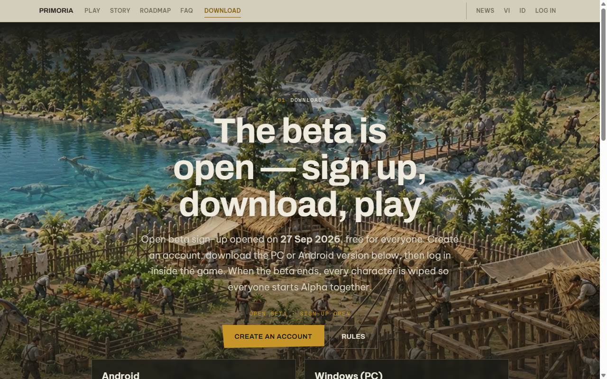
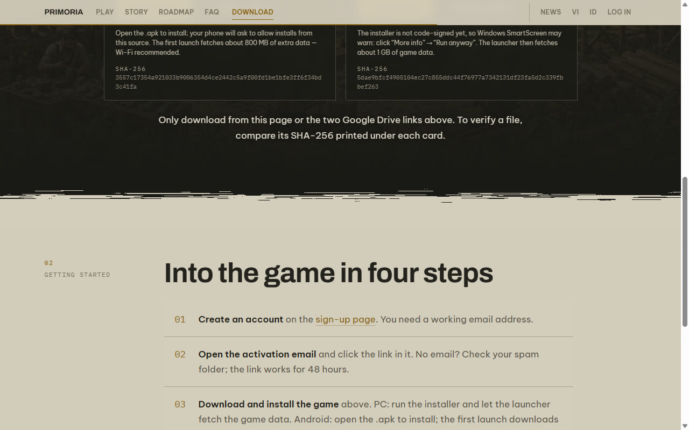
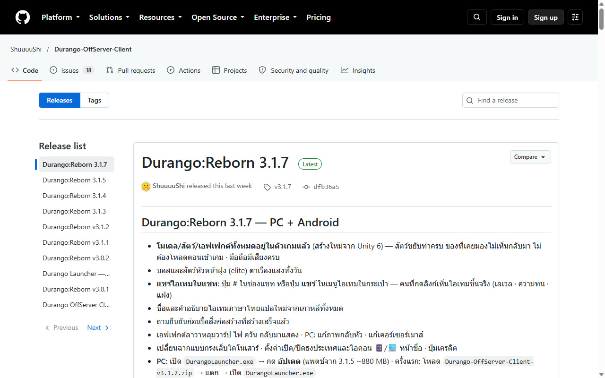
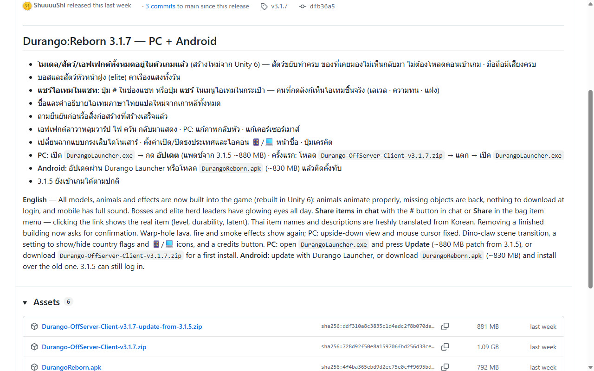

런처 공유 중단·대안 서버
한국 듀랑고:0 런처·
#런처 공유 중단
한국 듀랑고:0(홈커밍 드리머)의 런처와 게임 클라이언트는 더 이상 공유하지 않습니다. 예전에 안내하던 런처 내려받기도 내렸습니다.
대신 지금 직접 해 볼 수 있는 해외 팬 서버 두 곳을 아래에 소개합니다.
이 위키는 링크와 화면만 겁니다. 어떤 파일도 올리거나 다시 배포하지 않습니다. 두 서버는 운영하는 사람이 따로 있고 이 위키·듀랑고:0 과는 아무 관계가 없습니다. 가입·설치·문의는 각 사이트의 안내를 따라 주세요.
#대안 1 — 베트남 듀랑고 「PRIMORIA: Far Shores」(베랑고)
원작 서버를 처음부터 새로 짠 비영리 팬 프로젝트입니다. 서버는 베트남에 있고, 사이트는 베트남어·

접속하는 법
- 사이트 위쪽 메뉴의 DOWNLOAD 로 들어가 「CREATE AN ACCOUNT」에서 이메일로 계정을 만듭니다.
- 받은 인증 메일의 링크를 누릅니다(안 보이면 스팸함 확인, 링크는 48시간 동안 유효).
- 같은 페이지에서 PC(Windows 10/
11 64비트) 설치 파일이나 안드로이드(8.0 이상, 64비트) apk 를 받아 설치합니다. PC 는 설치 뒤 런처가 게임 자료 약 1GB 를 더 받습니다. 서명되지 않은 설치 파일이라 Windows 경고가 뜨면 「추가 정보 → 실행」을 누르라고 안내돼 있습니다. - 게임을 켜고 타이틀 화면을 누르면 로그인 창이 열립니다. 1번에서 만든 계정으로 로그인합니다. 사이트 로그인만으로는 게임에 들어가지지 않습니다.


#대안 2 — 태국 듀랑고 오프서버 「Durango: Reborn」
배포 페이지: https:/
태국 쪽 팬들이 운영하는 비영리 팬 서버의 배포 페이지입니다. 릴리스 노트는 태국어·

접속하는 법
- 위 릴리스 페이지에서 맨 위(Latest) 판을 엽니다.
- PC 는 처음이면 Assets 의 「Durango-OffServer-Client-버전.zip」(약 1GB)을 받아 압축을 풀고 DurangoLauncher.exe 를 실행합니다. 이미 깔려 있으면 런처에서 「업데이트」만 누르면 됩니다.
- 안드로이드는 같은 Assets 의 DurangoReborn.apk 를 받아 설치하거나, 런처로 업데이트합니다.
- 서버가 요구하는 최소 버전이 바뀌면 업데이트해야 들어갈 수 있으니, 접속이 안 되면 최신 판인지부터 확인하세요.

두 서버 모두 넥슨과 관계없는 비공식 팬 프로젝트입니다. 이용 중 문제나 문의는 각 운영진에게 해 주세요.